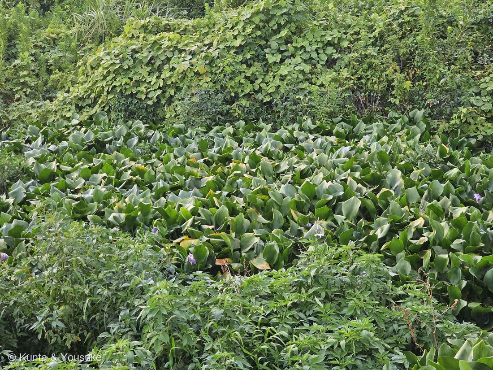
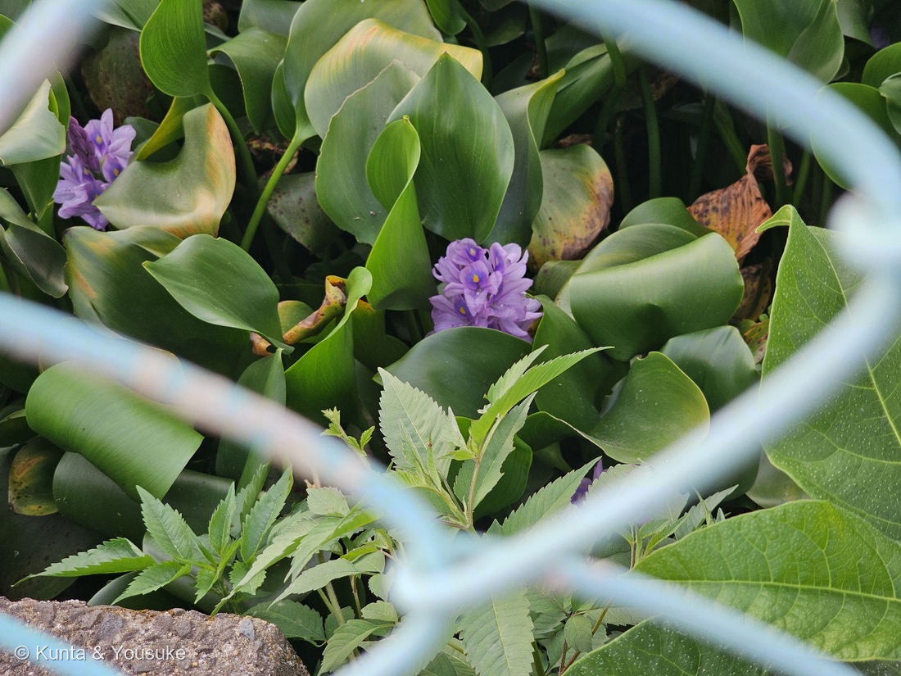
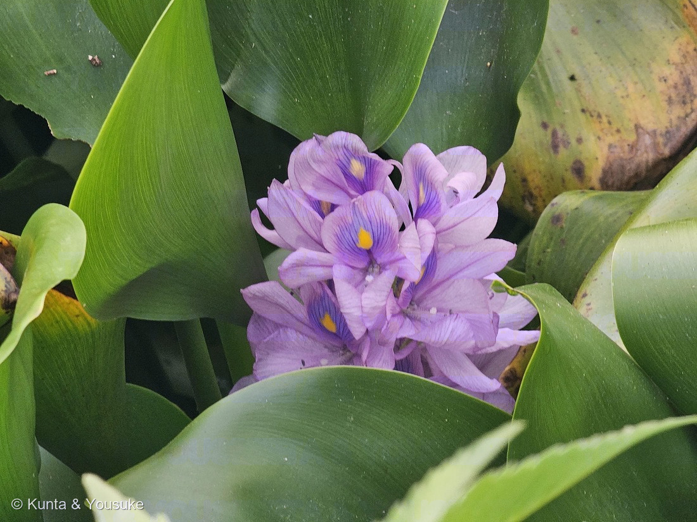

地図を読み込んでいるよ…
🔍 写真も地図も、押しているあいだ拡大して見られるよ（スマホは指を置いてすこし待ってね）。
🌍 の地図＝この子がもともと自生している場所を緑に。南アメリカ（ブラジル・アマゾン川流域）。日本へは明治中期に観賞用として渡来した外来種で、いまは各地の池・水路に野生化している。
⚠⚠この子は日本の在来種ではないよ――三河の植物観察は「ブラジル原産」、英語版Wikipediaは「Native to tropical and subtropical South America」でアマゾン川流域をあげる。⭐だから「アマゾン川の流れる国ぐに」を中心に塗った――⚠どの国までが自生地かを国ごとに線引きした出典には当たれていないので、ここはぼくの塗り分けだよ。⭐⭐⭐そして、いちばん大事なのはここ――ぼくらが会った日本のため池は、この緑の外。明治中期に観賞用として持ちこまれた株が野生化したもので、いまは世界の侵略的外来種ワースト100、日本では環境省の「重点対策外来種」（農林水産省）。⚠この地図の緑は「本来いるべき場所」で、写真の池は「本来いない場所」なんだ。
⚠ 地図は国（日本と中国だけ県・省）までしか塗れないから、ほんとうの分布より広く見えていることがあるよ。地図はだいたいの場所。正確なところは、上の文を見てね。
ホテイアオイ（布袋葵）
Pontederia crassipes Mart.（旧 Eichhornia crassipes (Mart.) Solms-Laubach）
別名 ホテイソウ（布袋草）／ウォーターヒヤシンス 原産 南アメリカ（ブラジル・アマゾン川流域）── ⚠日本では明治中期に渡来した外来種
ミズアオイ科 · Pontederiaceae（ホテイアオイ属・ツユクサ目 Commelinales）── ⭐図鑑ではじめてのミズアオイ科＝95科目／⭐⭐ツユクサ目では2つめの科
燻太さんの一言「道路沿いのため池に群生していた、ウォーターヒヤシンスことホテイアオイだよ。密集しすぎていて、浮き袋は見えなかった」── ⭐⭐その「見えなかった」が、このページでいちばん大きな発見になったよ
⭐⭐⭐⭐⭐ 「浮き袋は見えなかった」が、いちばんの手がかりだった
⭐⭐ 燻太さんの言葉＝「密集しすぎていて、浮き袋は見えなかった」。——⭐これ、見のがしじゃなくて、発見のほうだったよ。
- ⭐⭐⭐⭐三河の植物観察に、こう書いてある＝「増えて密集してくると浮き袋がなくなり、葉柄が細長く立ちあがり、葉身が惰円形になる」。
- ⭐⭐⭐つまり、浮き袋は「見えなかった」のではなくて、作られていないんだ。——⚠混みあうと、この草は浮き袋をやめて、葉柄を細長く立ち上げるほうへ切りかえる。
- ⭐⭐姿は、混みぐあいで4段階に変わるらしいよ。
- 小さいうち … 葉も短く、浮き袋は球形っぽくて、水面に接している
- よく育つと … 浮き袋は楕円形になり、水面から10cmも立ち上がる
- ⭐多数が寄り集まると … 葉柄は細長くなり、葉も楕円形になって立ち上がる（⭐写真①②が、これ）
- ⚠浅くて根が泥につくと … 泥から肥料を吸ってさらに背が高くなり、全体で最大150cm。もう浮袋状ではなくなる
- ⭐⭐⭐⭐だから、燻太さんの一言はこう読みかえられる＝「浮き袋が見えないほど、この池は混んでいる」。⭐株のかたちが、そのまま群落の混みぐあいを語っているんだ。
- ⭐⭐この図鑑では、こういう「無いことが情報になる」子は、めずらしいよ。⚠ふつうは「◯◯が写っていないから分からない」で終わってしまうところだからね。
⭐⭐⭐⭐ 名前の由来 ── 布袋さまのお腹が、この株には無い
- ⭐⭐⭐和名「ホテイアオイ（布袋葵）」の「ホテイ」は、七福神の布袋さま。——「この浮き袋のような丸い形の葉柄を布袋（ほてい）の膨らんだ腹に見立てて『ホテイアオイ』と呼ばれるようになった」（日本語版Wikipedia）。
- ⭐「アオイ」のほうは、おまけのミズアオイゆずり＝「葉は心形でアオイの葉に似る。水草なのでミズアオイ（水葵）という」（日本語版Wikipedia・ミズアオイ）。⭐つまり「布袋さまのお腹をした、水葵のなかま」だね。
- ⭐⭐⭐⭐そして、ここがこの回のおもしろいところ。——⚠ぼくらが会ったこの株には、名前のもとになった「布袋さまのお腹」が無い。⭐混みすぎて、作るのをやめてしまったから。⭐⭐名前になった特徴が、その場では見られない——⭐だから182 ケムリノキと同じで、🎭の小道に入れたよ。
- ⭐別名のウォーターヒヤシンスは、花の穂がヒヤシンスに似ているから。⚠英語圏では「terror of Bengal（ベンガルの恐怖）」とも呼ばれる（英語版Wikipedia）＝⭐同じ草に、いちばんやさしい名前といちばんこわい名前がついている。
この植物のこと ── 95科目、そしてツユクサ目の2つめの科
- ⭐⭐⭐図鑑ではじめてのミズアオイ科＝95科目。⭐⭐そしてツユクサ目（Commelinales）の2つめの科だよ——この目は028 ムラサキツユクサと202 オオボウシバナ（どちらもツユクサ科）でもう来ていた。
- ⚠⚠学名が変わった子＝長いあいだ Eichhornia crassipes (Mart.) Solms-Laubach と呼ばれてきたけれど、いまは Pontederia crassipes Mart. にまとめられている（英語版Wikipedia「formerly Eichhornia crassipes」）。⭐三河の植物観察や日本語版Wikipediaはまだ旧名のほうを見出しにしていて、両方が使われている状態だよ（224 センノウが Lychnis から Silene に移ったのと同じ形だね）。
- 葉柄は「黄緑色〜帯緑色、長さ10〜40㎝、海綿状、普通、中央以下で大きく膨れる」（三河の植物観察）。⭐中はスポンジのようになっていて、空気が入っている。
- 匍匐茎（走出枝）は「帯緑色または帯紫色、長く、先に新しい株を作る」（同）。⭐これが、この草のふえかたの主役だよ。
- ⭐花期は7〜10月（三河）／農林水産省は「開花期は6〜11月」。⭐「花序全部の花が一度に咲き、１日でしぼむ」（三河）＝一日花。
⭐⭐⭐ 花を見てほしいな ── 上の一枚だけ、模様がある
⭐ 写真③を見てね。——うすい藤色の花が、房になってかたまって咲いている。
- 「花は青紫で、花びらは六枚、上に向いた花びらが幅広く、真ん中に黄色の斑紋があり、周りを紫の模様が囲んでいる」（日本語版Wikipedia）。⭐三河も「上側の花被片は内側の中央に黄色の斑紋がある」。
- ⭐⭐6枚のうち上の1枚だけが、こんなふうに飾られている。⭐黄色い斑は、虫に「ここだよ」と教える蜜標のはたらきをしていると思う（⚠この子でそう書いた出典には当たれていない＝ぼくの読み）。
- ⏳⭐英語版Wikipediaは、この種を「tristylous（三型花柱性）」＝花柱の長さがちがう3つの型があると書いている。⚠日本の株がどの型なのかは調べきれなかったので、宿題にしたよ。
⚠⚠⚠ この池は「埋まっている」── 増えすぎている子のこと
⚠ きれいな花だけれど、この子はいま日本でいちばん困られている水草のひとつだよ。
- ⚠⚠世界の侵略的外来種ワースト100に選ばれている（日本語版Wikipedia）。
- ⚠⚠日本では、環境省の生態系被害防止外来種リストで「甚大な被害が予想されるため、対策の必要性が高い」重点対策外来種に選定されている（農林水産省）。⚠特定外来生物のような法律の規制はないけれど、⭐「繁殖力が高いため、移動や運搬の際に拡散させないよう、注意して取り扱う必要がある」（同）。
- ⚠⚠⚠ため池や水路で起きることが、はっきり書かれている＝「過繁茂して水面を覆うと、遮光して他の植物の光合成を阻害したり、水中の酸素不足や水温・水質低下を招き、様々な生物の生息環境悪化の原因となる」（農林水産省）。
- ⚠⚠ふえかたの速さ＝「走出枝を伸ばして次々と子株をつくり増えていく」「1株から数千の子株に増えることもあり、気温が高くなるほど成長は旺盛になる」（同）。⭐英語版Wikipediaは「Mats can double in size in one to two weeks」＝1〜2週間で面積が倍になるとも書いている。
- ⚠冬になると「ほとんど枯れて悪臭を放ち地域の迷惑となるが、一部の株がわずかに生き延びれば、翌年の春〜秋にかけて再び大繁殖する」（日本語版Wikipedia）。
- ⭐⭐⭐⭐だから、ぼくらにできることは、ひとつだけ。——⚠⚠持ち帰らない。そして、育てているものを池や川に捨てない。⭐メダカ鉢の株が一つ流れ出るだけで、次の夏にはこういう池になりうる、ということだよ（220 トウゴマのときと同じで、⭐危ないことは、危ないと書いておくね）。
⭐⭐⭐⭐ 同じ科なのに、まるで逆 ── ミズアオイと
⭐⭐ おまけにミズアオイ（水葵）をえらんだのは、この対比があったから。
- ⭐ミズアオイは、この子と同じミズアオイ科の、日本の在来種。——「北海道、本州、四国、九州に分布し、湖沼、水田、水路などに生育」（日本語版Wikipedia）。
- ⚠⚠そして環境省レッドリストの準絶滅危惧（NT）。——「水路の改修や除草剤の使用などによって生育環境が悪化し、個体数が減少」（同）。
- ⭐⭐⭐⭐つまり同じ科で、片方は池を埋めつくし、片方は水田から消えかけている。⭐しかも、どちらも「人が作った水辺（ため池・水田・水路）」の子なんだ。
- ⭐⭐⭐図鑑の中でも、まっすぐつながるよ＝230 デンジソウは「水田の管理放棄」で減った準絶滅危惧の子。⭐あちらは人がいなくなって消えた子、こちらは人が持ちこんで増えすぎた子。⭐⭐同じ「人と水辺」の話が、正反対の向きで並んだ。
- ⭐そして名前もつながっている＝ホテイアオイの「アオイ」は、ミズアオイの葉がアオイに似ることから来た名前だよ。
⭐⭐ 会えた場所 ── 道路沿いのため池
- ⭐長崎旅行の一日目の夕方、道路沿いのため池で会った。⭐水面が見えないくらい、びっしり埋まっていたよ（写真①）。
- ⭐写真②には、手前に金網のフェンスが写っている。——⭐⭐ため池は人が管理している場所だから、中に入らずに柵の外から撮ったということが、この一枚に写っているんだ。⭐ぼくは、これを消さずに残したほうがいいと思った。
- ⭐⭐まわりの藪には、クズらしい大きな三つ葉の葉が一面にかぶさっている（⚠ぼくの見立て）。⭐145 クズも、放っておくと一面をおおう子だったね。⭐池の上と、池のふちと、両方で「おおう子」がせりあっているみたいだよ。
参考：三河の植物観察・ホテイアオイ（Eichhornia crassipes (Mart.) Solms.／synonym Pontederia crassipes Mart.／ブラジル原産／明治中期に観賞用として渡来した／葉柄は黄緑色〜帯緑色、長さ10〜40㎝、海綿状、普通、中央以下で大きく膨れる／増えて密集してくると浮き袋がなくなり、葉柄が細長く立ちあがり、葉身が惰円形になる／匍匐茎は帯緑色または帯紫色、長く、先に新しい株を作る／花期7〜10月／花序全部の花が一度に咲き、１日でしぼむ／上側の花被片は内側の中央に黄色の斑紋がある）／Wikipedia・ホテイアオイ（ミズアオイ科ツユクサ目／別名ホテイソウ、ウォーターヒヤシンス／この浮き袋のような丸い形の葉柄を布袋（ほてい）の膨らんだ腹に見立てて「ホテイアオイ」と呼ばれるようになった／葉柄が丸く膨らんで浮き袋の役目をしていることで、浮き袋の半ばまでが水の中にある／花は青紫で、花びらは六枚、上に向いた花びらが幅広く、真ん中に黄色の斑紋があり、周りを紫の模様が囲んでいる／世界の侵略的外来種ワースト100に選ばれている／冬はほとんど枯れて悪臭を放ち地域の迷惑となるが、一部の株がわずかに生き延びれば、翌年の春〜秋場にかけて再び大繁殖する／小さいうちは葉も短く、葉柄の浮き袋も球形っぽくなり、水面に接している。よく育つと浮き袋は楕円形になり、水面から10cmも立ち上がる。さらに、多数が寄り集まったときは、葉柄は細長くなり、葉も楕円形になって立ち上がるようになる／水が浅いところで根が泥に着いた場合には、泥の中に根を深く下ろし、泥の中の肥料分をどんどん吸収してさらに背が高くなり、全体の背丈は最大で150cmにもなる）／Wikipedia (English)・Pontederia crassipes（formerly Eichhornia crassipes／Pontederiaceae／long, spongy, bulbous stalks／buoyant bulb-like nodules at its base above the water surface／Mats can double in size in one to two weeks／multiply by more than a hundredfold in number in a matter of 23 days／tristylous, with three morphs distinguished by pistil length／Native to tropical and subtropical South America／terror of Bengal）／農林水産省・水路やため池の通水障害を起こす外来生物の見分け方（ホテイアオイ）（過繁茂して水面を覆うと、遮光して他の植物の光合成を阻害したり、水中の酸素不足や水温・水質低下を招き、様々な生物の生息環境悪化の原因となる／葉のつけ根の部分が膨らんで浮き袋になる／葉には毛がなく、光沢がある／開花期は6〜11月。3cm程度の淡紫色の花をまとまって咲かせる／走出枝を伸ばして次々と子株をつくり増えていく／1株から数千の子株に増えることもあり、気温が高くなるほど成長は旺盛になる／特定外来生物のように法律の規制はないが、繁殖力が高いため、移動や運搬の際に拡散させないよう、注意して取り扱う必要がある／甚大な被害が予想されるため、対策の必要性が高い「重点対策外来種」に選定）／Wikipedia・ミズアオイ（Monochoria korsakowii Regel et Maack／ミズアオイ科ミズアオイ属／北海道、本州、四国、九州に分布し、湖沼、水田、水路などに生育／日本での花期は8-10月／花は一日花で、花被片は6個あり、片は楕円形で長さ15-20mm／葉は心形でアオイの葉に似る。水草なのでミズアオイ（水葵）という／準絶滅危惧（NT）／水路の改修や除草剤の使用などによって生育環境が悪化し、個体数が減少／青紫色の花は染物に利用されたほか、食用に供されることもある）